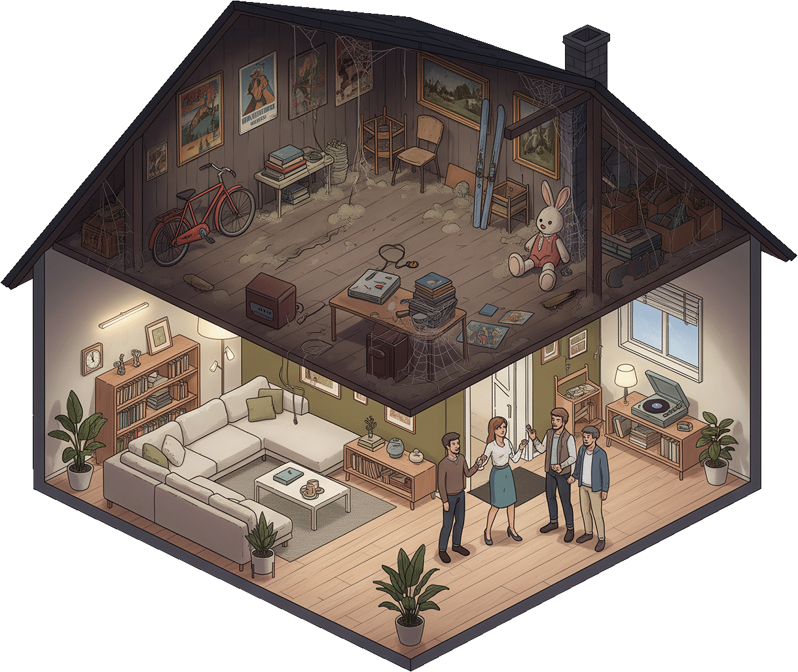

Представим себе дом с классным интерьером. Везде выдержан общий стиль, ничего лишнего. Цвета и материалы тщательно подобраны, пространство зонировано, акценты расставлены. Хозяин скрупулезно создавал весь этот уют и теперь, когда все готово, он приглашает друзей. Гостям показывают каждую комнату, а те не скупятся на комплименты, получилось и правда супер.
Но в доме есть место, куда не зовут гостей – это чердак. Там темно, пыльно, углы затянуты паутиной и каждый сантиметр завален старым хламом. Хозяин уже сам точно не знает что лежит на чердаке. Он залезает туда пару раз в год и, копаясь в вещах, находит давно забытые сокровища.
В этой длинной метафоре первый этаж – это портфолио творческого специалиста, а чердак – это та самая папка на его компьютере, в которой лежат остальные 90% работ. Недоделанные проекты, непринятые концепты, нереализованные идеи или просто работы, которые не прошли отбор в портфолио.
Мы хотим открыть двери на чердак для всех, поэтому мы придумали Стол – музей непринятых работ.
Стол — это телеграм канал, в котором публикуются любые работы, которые не лежат в портфолио у их авторов. Отправить работы можно с помощью бота-куратора.
Музей объединяет все творческие профессии. Если ваша работа связана с творчеством и у вас есть то, что вы обычно никому не показываете — отправляйте это в Стол.
То есть можно отправлять не только картинки?
Да. Можно отправлять любой результат творческого труда: тексты, видеоролики, треки, подкасты, фотографии, дизайны, картины, иллюстрации, да что угодно.
Конечно, нет. В этом и смысл. Мы не оцениваем работы перед их публикацией, показываем все в том виде в котором прислал автор.
Но мне лень все собирать, оформлять и описывать, чтобы отправить это в Стол.
Не нужно ничего оформлять. Присылайте файлы в том виде в котором они лежат у вас и добавьте небольшой комментарий. Не хотите писать комментарий? Можно и без него.
Хорошо, я готов отправить работу в Стол
Отправить работу в Стол!